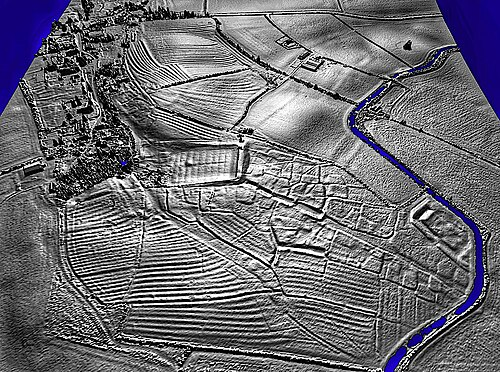
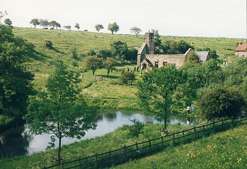

ISOLATED TEST • No live article or asset changes • Original Wikipedia images excluded for this fresh-selection exercise
Deserted medieval village
Overview
In the United Kingdom, a deserted medieval village (DMV) is a former settlement which was abandoned during the Middle Ages, typically leaving no trace apart from earthworks or cropmarks. If there are three or fewer inhabited houses the convention is to regard the site as deserted; if there are more than three houses, it is regarded as a shrunken medieval village. There are estimated to be more than 3,000 DMVs in England alone.
Other deserted settlements
Not all sites are medieval: villages reduced in size or disappeared over a long period, from as early as Anglo-Saxon times to as late as the 1960s, due to numerous different causes.
Reasons for desertion
Over the centuries, settlements have been deserted as a result of natural events, such as rivers changing course or silting up, flooding (especially during the wet 13th and 14th centuries) as well as coastal and estuarine erosion or being overwhelmed by windblown sand.

Lidar image of the deserted medieval village at Wormleighton, Warwickshire, showing village earthworks and surrounding ridge and furrow.Image source and credits
Dr John Wells. Deserted Medieval Village, Wormleighton in Warwickshire.jpg. Source: https://commons.wikimedia.org/wiki/File:Deserted_Medieval_Village,_Wormleighton_in_Warwickshire.jpg
CC BY 4.0 — https://creativecommons.org/licenses/by/4.0. Display copy from Wikimedia; no content edits.Many were thought to have been abandoned due to the deaths of their inhabitants from the Black Death in the mid-14th century. While the plague would often have greatly hastened the population decline, which had already set in by the early 14th century in England because of soil exhaustion and disease, most DMVs actually seem to have become deserted during the 15th century. At this time, inclosure acts and other policies allowed land traditionally cultivated for cereals and vegetables to be transformed into pastures for sheep. The medieval ridge and furrow cultivation pattern remains evident in fields, even until today. This change of land use by landowners, which was to take advantage of the profitable wool trade, led to hundreds of villages being deserted.
Later, the aristocratic fashion for grand country mansions, parks and landscaped gardens led to whole villages being moved or destroyed to enable lords of the manor to participate in this trend, a process often called emparkment or enclosure.
Examples

Wharram Percy deserted medieval village, looking north from the old fishpond toward the church ruin, photographed in 1993.Image source and credits
The original uploader was Nyh at English Wikipedia.. Wharram Percy Geograph.jpg. Source: https://commons.wikimedia.org/wiki/File:Wharram_Percy_Geograph.jpg
CC BY-SA 2.0 — https://creativecommons.org/licenses/by-sa/2.0. Display copy from Wikimedia; no content edits.Perhaps the best-known deserted medieval village in England is at Wharram Percy in North Yorkshire, because of the extensive archaeological excavations conducted there between its discovery in 1948 and 1990. Its ruined church and its former fishpond are still visible.
In Northamptonshire, around 100 villages can be classified as deserted: there are articles relating to many of them, such as Onley, Althorp, Canons Ashby, Church Charwelton and Coton along with Faxton, Glendon, Snorscombe, Wolfhampcote and Wythmail.
Other examples are at Gainsthorpe and Burreth in Lincolnshire.